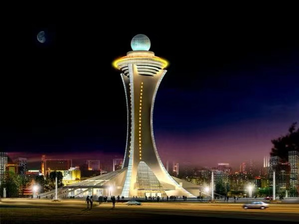
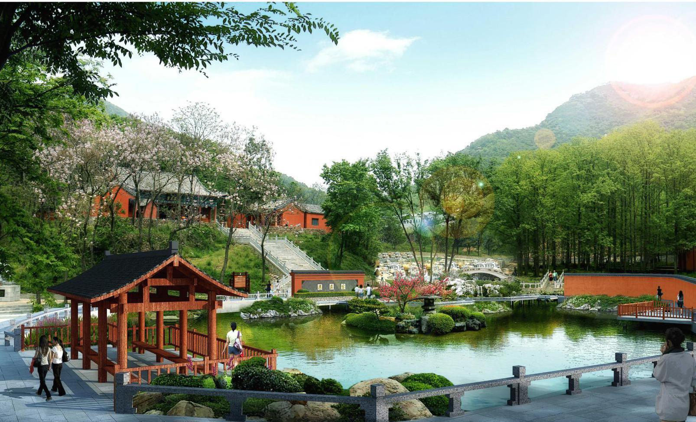
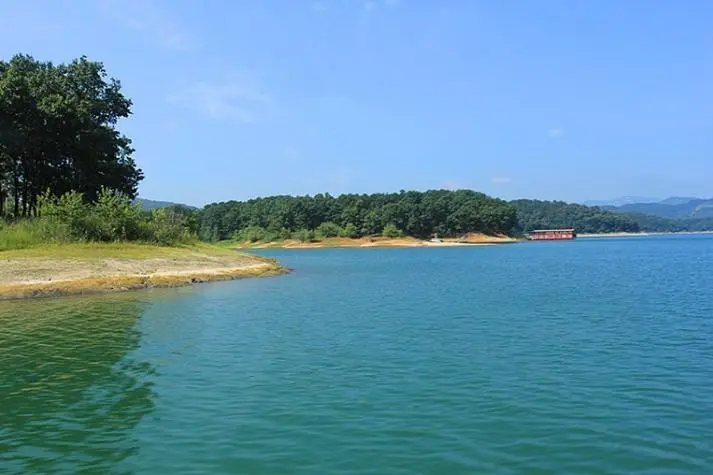

气象塔
气象塔位于驻马店市天中广场东南角，东临乐山大路，南临通达路，是驻马店市新一代天气雷达楼，荣获2016年寻找河南当代最美建筑大奖 气象塔高110米，是中国气象塔第二高，它共24层，代表24节气变化，象征驻马店生生不息的农耕文化的饱满丰腴。
老乐山
老乐山古称朗陵山，隋代改为朗山，宋大祥符五年(公元1012年)因避宋祖赵玄朗之讳改名为乐山。 它位于位于河南省南部，驻马店市区西南9公里，确山县城西8公里处。 这是一座道教圣山，亦为道家福地。历史上以“八宫两观一拜台”为代表的道教建筑，如众星拱月般环绕乐山老顶，雄伟壮观，气势磅礴，引远近朝圣者前来登高祈福。 
薄山湖
薄山湖风景名胜区位于河南省驻马店市确山县城南l8公里处，这里群岭苍翠，碧水千曲，人文景观和自然景观美不胜收，有“中州桂林”、“水上公园”之称。 唐代大诗人李白、大书法家颜真卿、明代大旅游家徐霞客等一大批文人骚客曾在此浏览观光，留下许多墨宝和千古绝唱。曾被中央电视台《西游记》剧组遴选为外景地。
